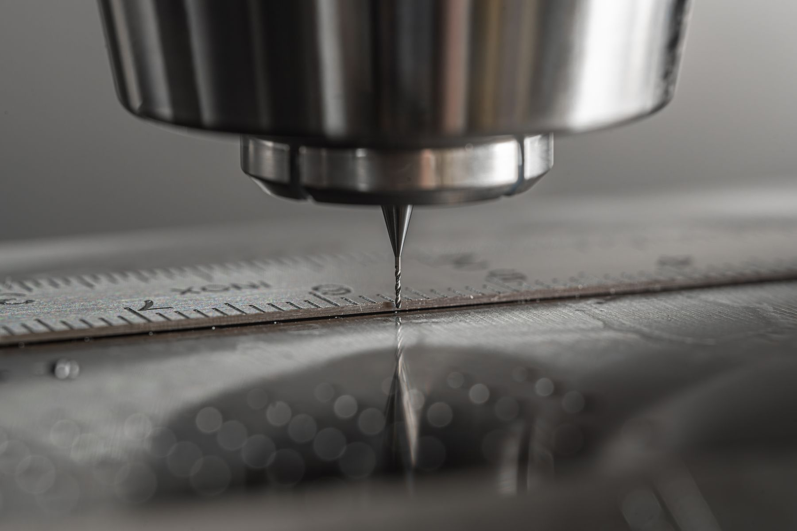
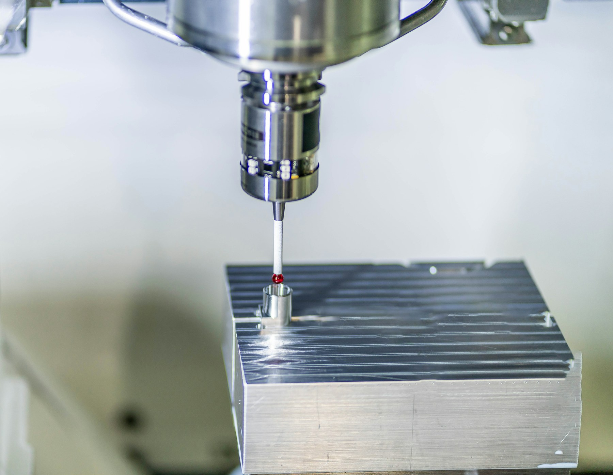

CNC 정밀 가공
밀링과 선반을 중심으로 소재, 형상, 공차를 도면과 함께 검토합니다.
가공 범위 상세 보기 →CNC PRECISION MACHINING · SINCE 1998
밀링과 선반, 자동차 부품 시제품, 소량 다품종 양산. 1개부터 가공 가능 여부를 검토하고 도면 접수 후 1일 이내 견적을 회신합니다.
도면으로 견적 요청
WORK RANGE
밀링과 선반의 정밀 가공부터 자동차 부품 시제품, 소량 다품종 양산까지 도면의 목적에 맞춰 검토합니다.
밀링과 선반을 중심으로 소재, 형상, 공차를 도면과 함께 검토합니다.
가공 범위 상세 보기 →TRUST RECORD
1998년 설립에서 두 차례 품질 인증 취득까지, 가공의 기준을 쌓아온 시간을 확인할 수 있습니다.
인천 남동공단에서 정밀 가공 기반을 이어왔습니다.
계약상 납품처 사명은 공개하지 않으며, 자동차·의료기기·항공 분야의 거래 경험으로 생산 대응의 폭을 전합니다.
EQUIPMENT PREVIEW
가공 설비 12대와 측정 설비가 시제품 한 개부터 소량 다품종 양산까지 이어지는 생산 기반을 만듭니다.

SELECTEDCNC 머시닝센터Doosan DNM 시리즈 · 6대
DRAWING TO QUOTE
정해지지 않은 조건은 ‘미정’으로 남겨도 됩니다. 도면과 필요한 조건을 남기면 1일 이내 견적을 회신합니다.